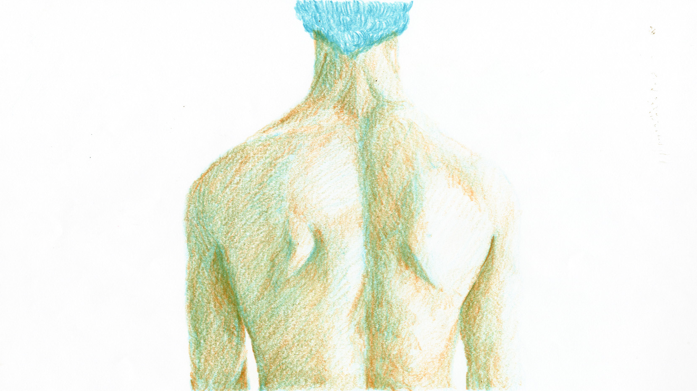
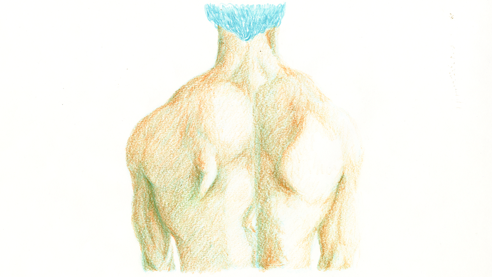
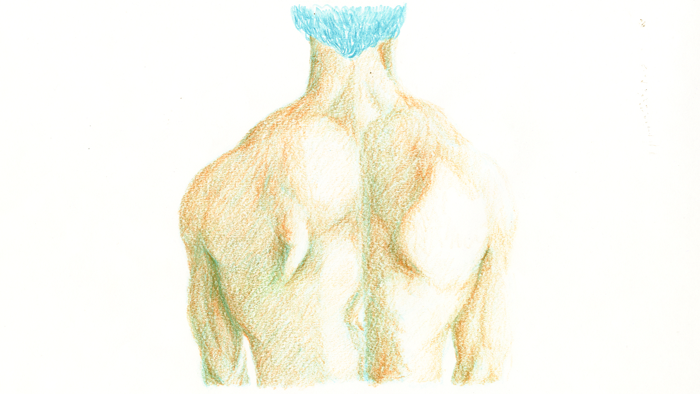
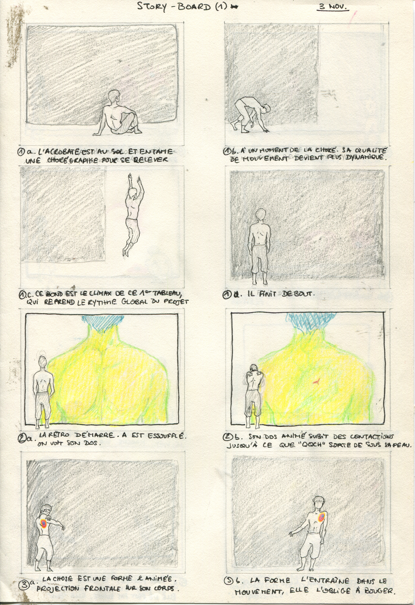
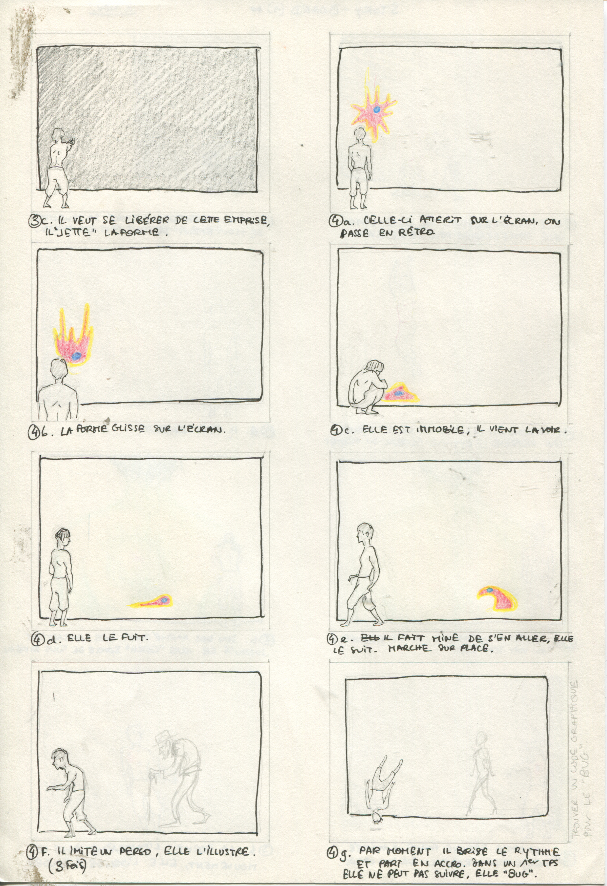
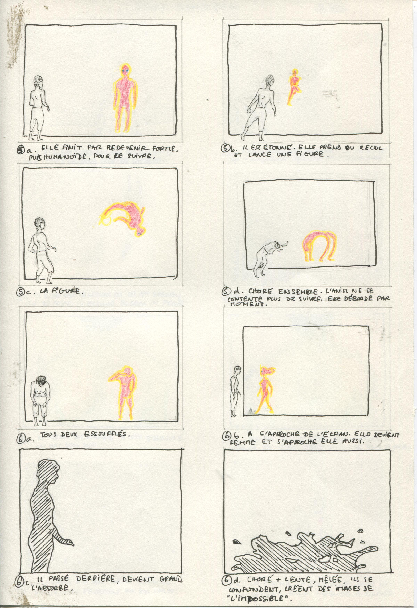
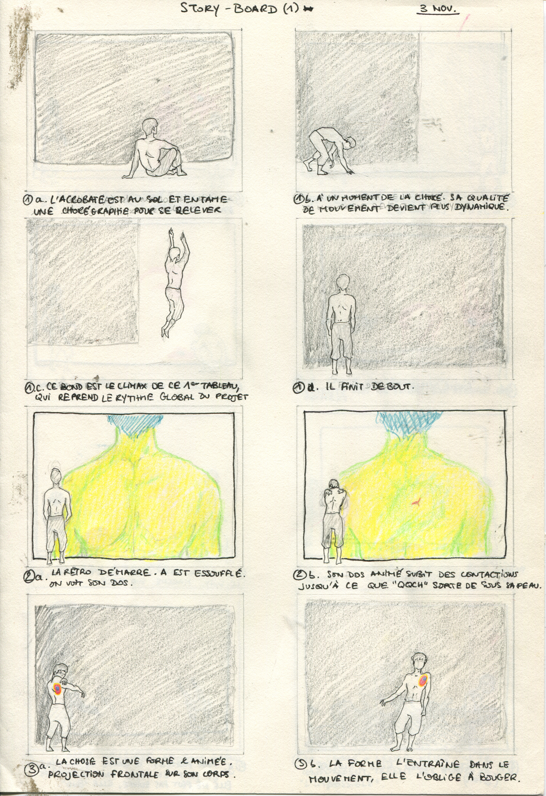
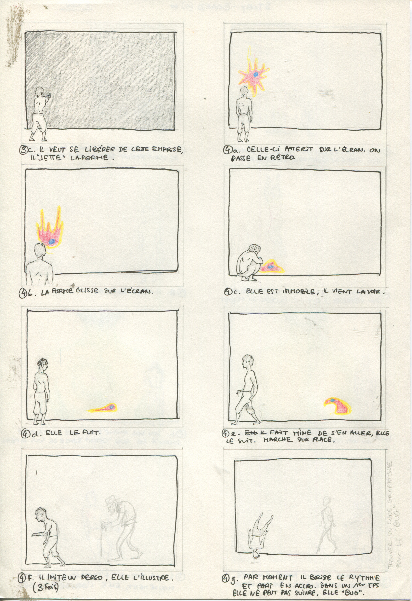
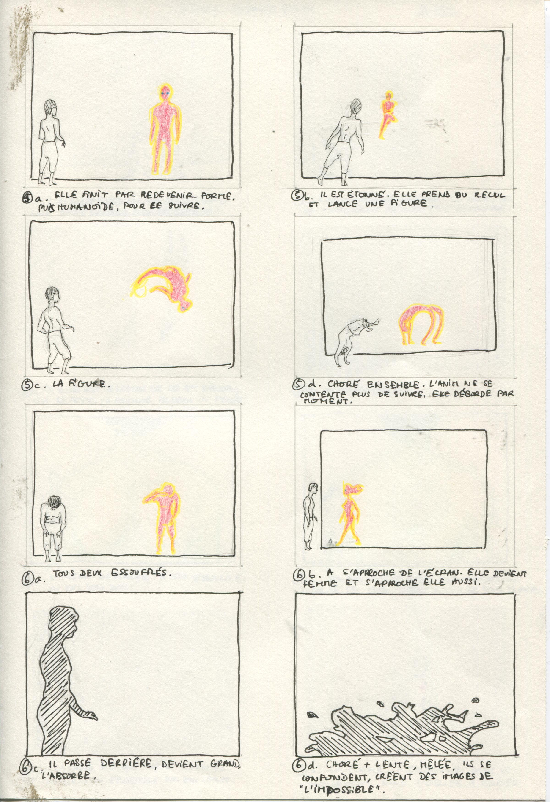

POSSIBLE
During my second year in school, I made my first transmedia experiment, working with both animation and acrobatics.
I had this idea that we could extend the possibility of reality by considering animation as a character, living and interacting on the stage. And most of all, that we could extend the possibility of animation, forcing it into the real world, giving it some more weight, some more existence. As the real acrobat is limited in what his body can do, and the animation is free to move and transform completly freely, in the same time the acrobat has the whole world to perform in and explore, whereas the animation is bond to the screen limit.
With Aurélien Oudot, dancer and acrobat, we do a similar work in the end : we use movement to express different feelings and ideas. In « Possible », we wanted to tell a story of how much it is pleasurable to explore the infinite possibilities of moving through space, whether it is real or virtual.
The result of this exercise is kind of clumsy, not quite what we wanted, Aurélien was wounded in the middle of our work, I was still new to animation, things didn't go as planned. But we were happy to try this, and to take a step further in the seizure of our respective medium.
Performance_version mai 2012 from Studio KO on Vimeo.

 

 





Permalink to this page